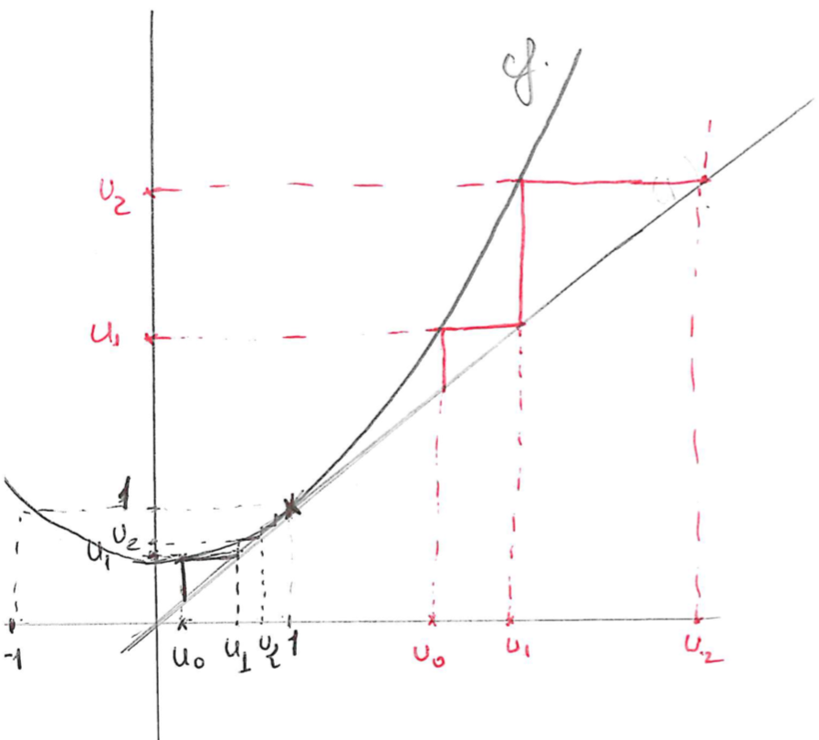

Chap3 Ex 7
Lorsque l’on veut étudier une suite récurrente définie par \(u_n+1 = f (u_n)\), on étudie les variations de \(f\) , le signe de \(f (x) − x\), on détermine, s’il(s) existe(nt), le(s) point(s) fixe(s) de \(f\).
Question 3: On définit \[f(x) = \frac{1}{2}(x^2+1)\]
\[\left\{\begin{matrix} u_{0} \in \mathbb{R}\\ (u_{n+1} = f(u_n),\quad n\in\mathbb{N}) \end{matrix}\right.\]
- Etudier graphiquement la suite \((u_n)\).
- Démontrer les résultats précédents dans le cas \(u_0 \ge 0\).
- Etudier le cas \(u_0<0\).
Solution
Question a)
Etude graphique
- On trace \(f\) et la droite \((d) : y = x\)
- On place \(u_0\)
- On note \(u_1 = f(u_0)\)
- On reporte \(u_1\) sur l’axe des abscisses à l’aide de la droite \((d)\)
- On derive le comportement de \((u_n)\) (monotonie etc.) par rapport au point fixe de \(f\)
Rappel : étant donné une fonction, le(s) point(s) fixe(s) est(sont) la(les) solution de l’équation \(f(x) = x\).
- Dans notre cas \[f(x)-x = \frac{1}{2}{(x-1)}^2\]
- ainsi \[\left\{\begin{matrix} \text{Si} &\quad x = 1, &f(x) = x\\ \text{Si} &\quad x \neq 1, &f(x) > x \end{matrix}\right.\]

Ce qu’on observe graphiquement
- si \(0 \le u_0 < 1 \implies (u_n)\) est \(\nearrow\) et converge a priori vers 1.
- si \(u_0 = 1 \implies (u_n)\) est constante.
- si \(u_0 > 1 \implies (u_n)\) est \(\nearrow\) divergente.
- si \(-1 < u_0 < 0\) alors \(u_1 \in [0,1[\) et on se retrouve dans le 1er cas.
- si \(u_0 = -1 \implies u_1 = 1\) et on se retrouve dans le 2ième cas.
- si \(u_0<-1\implies u_1>1\) et on se retrouve dans le 3ième cas.
Question b)
si \(u_0 = 1\) alor \(f(u_0)= u_0 = 1 = u_n\), la suite est constante.
si \(u_0\in [0,1[\) on a \(f(x)\ge x\) donc \(u_{n+1}\ge u_n\), la suite est coissante.
Montrons par récurrence que \(u_n\in [0,1]\)
- \(0\le u_0 \le 1 \implies f(0) \le u_1 \le 1\) car \(f\) est \(\nearrow\), donc \(u_1\in[0,1]\)
- Hypothèse : \(u_n \in [0,1]\)
- itération : \(u_n \in [0,1] \implies \frac{1}{2}=f(0)\le f(u_n) = u_{n+1} \le f(1) = 1\) donc, \(u_n \in [0,1] \implies u_{n+1} \in [0,1]\).
Conclusion : \(\forall n>0,\quad u_n \in [0,1]\)
- \((u_n)\) est coissante et majorée par \(1\)
- \((u_n)\) admet, donc une limit, notons \(l\).
on a \[\lim\limits_{n \to + \infty} u_{n+1} = \lim\limits_{n \to + \infty} \frac{1}{2}({u_n}^2 + 1)\] \[l = \frac{1}{2} (l^2+1) \iff {(l-1)}^2 = 0 \iff l = 1\]
Si \(u_0 > 1\)